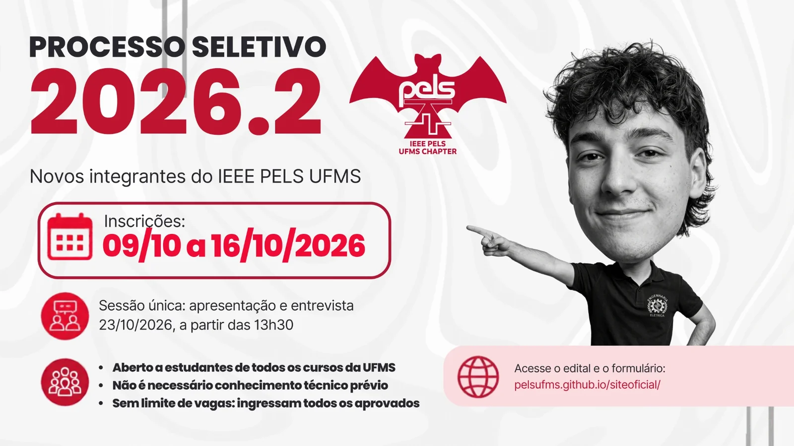

Processo Seletivo 2026.2
2026.2 Selection Process
Ingresso de novos integrantes no Capítulo Estudantil IEEE PELS UFMS. Sem limite de vagas, sem prova técnica e aberto a estudantes de todos os cursos da UFMS.
Admission of new members to the IEEE PELS UFMS Student Chapter. No cap on openings, no technical exam, and open to students from every UFMS program.

Inscrições
Enrollment
09/10 a 16/10/2026, até 23h59 do último dia, pelo formulário online.
Oct 9 to Oct 16, 2026, until 11:59 pm on the last day, through the online form.
Sessão única
Single session
23/10/2026, a partir das 13h30. Apresentação e entrevista, com todos os candidatos juntos.
Oct 23, 2026, from 1:30 pm. Presentation and interview, with all candidates together.
Vagas
Openings
Sem limite: ingressam todos os aprovados, sem classificação entre eles.
No cap: everyone who passes joins, with no ranking among them.
Tutor
Advisor
Prof. Dr. Raymundo Cordeiro
Material de divulgação
Promo material
As artes do processo seletivo. Arraste para o lado (ou use as setas) e toque em uma imagem para ampliar.
The selection process artwork. Swipe sideways (or use the arrows) and tap an image to enlarge it.
O que é o processo seletivo
What the selection process is
Este edital abre o processo seletivo para o ingresso de novos integrantes no Capítulo Estudantil IEEE PELS UFMS, vinculado ao Ramo Estudantil IEEE UFMS. O Capítulo é aberto a estudantes de todos os cursos da UFMS interessados em Eletrônica de Potência.
This call opens the selection process for new members of the IEEE PELS UFMS Student Chapter, affiliated with the IEEE UFMS Student Branch. The Chapter is open to students from every UFMS program who are interested in Power Electronics.
Não há número limitado de vagas: a seleção verifica se o candidato atinge o mínimo esperado de interesse e disponibilidade para participar das atividades, independentemente do conhecimento técnico prévio. Não há prova escrita, prova técnica nem análise de histórico escolar.
There is no cap on openings: the selection checks whether the candidate meets the expected minimum of interest and availability to take part in the activities, regardless of prior technical knowledge. There is no written exam, technical exam or review of academic records.
Quem pode se inscrever
Who can enroll
Pode se inscrever o estudante que:
Students who can enroll are those who:
- tenha matrícula ativa na UFMS, na graduação ou pós-graduação, em qualquer curso;
- tenha interesse em Eletrônica de Potência e nas atividades do Capítulo;
- tenha disponibilidade para participar das reuniões gerais mensais e de pelo menos uma atividade acadêmica por semestre;
- aceite as regras do edital, do Regimento Interno e do Código de Conduta do IEEE.
- have an active UFMS enrollment, undergraduate or graduate, in any program;
- be interested in Power Electronics and in the Chapter's activities;
- be available for the monthly general meetings and at least one academic activity per semester;
- accept the rules of the call, of the Bylaws and of the IEEE Code of Conduct.
Não é exigida membresia IEEE nem PELS para se inscrever. A associação ao IEEE e à sociedade PELS é feita depois da aprovação, pelo site oficial do IEEE. Ela é necessária para ser Membro PELS e para se candidatar a cargos da Diretoria.
IEEE or PELS membership is not required to enroll. Joining IEEE and the PELS society happens after approval, through the official IEEE website. It is required to be a PELS Member and to run for Board positions.
Cronograma
Schedule
- 07/10 Publicação do edital nos canais oficiais do Capítulo e do Ramo Call published on the official Chapter and Branch channels
- 09/10 → 16/10 Inscrição pelo formulário (até 23h59 do último dia) Enrollment through the form (until 11:59 pm on the last day)
- 18/10 Publicação da lista de inscritos, da ordem de apresentação e do local da sessão List of enrolled candidates, presentation order and session venue published
- 23/10 Sessão única de apresentação e entrevista, a partir das 13h30 Single presentation and interview session, from 1:30 pm
- 25/10 Publicação do resultado preliminar Preliminary result published
- 26/10 Recurso (até 23h59) Appeals (until 11:59 pm)
- 28/10 Resultado final Final result
- 30/10 Reunião de boas-vindas e início do apadrinhamento Welcome meeting and start of the mentoring
Inscrição
Enrollment
A inscrição é feita apenas pelo formulário online, divulgado nos canais oficiais do Capítulo. O formulário pede:
Enrollment is done only through the online form, shared on the Chapter's official channels. The form asks for:
- nome completo, e-mail, telefone e RGA (matrícula UFMS);
- curso e semestre;
- opção de apresentação presencial ou online;
- confirmação de presença na sessão de 23/10/2026, a partir das 13h30;
- um resumo, em até 500 caracteres, da ideia que o candidato pretende apresentar para o Capítulo (projeto, evento, palestra ou atividade);
- pedido de adaptação de acessibilidade, se necessário;
- aceite das regras do edital.
- full name, e-mail, phone number and RGA (UFMS student ID);
- program and semester;
- in-person or online presentation option;
- confirmation of attendance at the Oct 23, 2026 session, from 1:30 pm;
- a summary, up to 500 characters, of the idea the candidate plans to present to the Chapter (project, event, talk or activity);
- accessibility accommodation request, if needed;
- acceptance of the call's rules.
Inscrições fora do prazo ou incompletas não são aceitas. Em caso de mais de uma inscrição da mesma pessoa, vale a última enviada. O resumo da ideia serve para organizar a sessão e pode ser aprimorado até a apresentação.
Late or incomplete enrollments are not accepted. If the same person submits more than once, the last submission counts. The idea summary helps organize the session and can be improved until the presentation.
Apresentação e entrevista
Presentation and interview
A sessão é única e reúne todos os candidatos, a partir das 13h30 de 23/10/2026. Os candidatos apresentam um após o outro, na ordem publicada pelo Capítulo, e cada um tem cerca de 15 minutos: uma apresentação em duas partes, seguida de uma entrevista.
The session is a single one and brings all candidates together, from 1:30 pm on Oct 23, 2026. Candidates present one after another, in the order published by the Chapter, and each has about 15 minutes: a two-part presentation followed by an interview.
Parte 1 · o IEEE e a PELS (~4 min)
Part 1 · IEEE and PELS (~4 min)
O que você entende sobre o IEEE e a PELS, pesquisando em fontes públicas, como os sites oficiais. Pode abordar: o que é o IEEE e o que ele faz; o que é a sociedade PELS e a Eletrônica de Potência; como funcionam o Ramo IEEE UFMS e o Capítulo PELS UFMS; o que a membresia oferece a um estudante.
What you understand about IEEE and PELS, researching public sources such as the official websites. You can cover: what IEEE is and does; what the PELS society and Power Electronics are; how the IEEE UFMS Branch and the PELS UFMS Chapter work; what membership offers a student.
Parte 2 · uma ideia para o Capítulo (~4 min)
Part 2 · an idea for the Chapter (~4 min)
Um projeto, evento, palestra ou atividade que você queira realizar na PELS. Explique: qual é a ideia e o objetivo; para quem é; como imagina realizá-la e o que seria preciso (pessoas, local, recursos, tempo); qual seria o seu papel.
A project, event, talk or activity you would like to carry out at PELS. Explain: what the idea and its goal are; who it is for; how you imagine making it happen and what it would take (people, venue, resources, time); what your role would be.
Entrevista (~5 min)
Interview (~5 min)
A banca pergunta sobre a ideia, a motivação, a disponibilidade, o trabalho em equipe e as expectativas em relação ao Capítulo. Não cobra conhecimento técnico específico de Eletrônica de Potência.
The panel asks about the idea, motivation, availability, teamwork and expectations about the Chapter. It does not require specific technical knowledge of Power Electronics.
- A ideia deve fazer sentido com as finalidades do Capítulo, como programas de entrada e retenção de membros, visitas técnicas, minicursos, palestras, seminários e integração. Não é preciso um plano completo.
- O uso de slides é opcional. A banca avalia o quanto você se preparou, a clareza do que apresenta e o que compreendeu, e não o nível técnico.
- Formato: presencial, na UFMS, em local divulgado com a lista de inscritos. Quem optar pela modalidade online participa por videoconferência, com link enviado por e-mail, e mantém a câmera ligada durante a apresentação e a entrevista.
- Atraso e falta: há tolerância de 10 minutos em relação ao horário de início da sessão ou ao horário da sua apresentação. Quem faltar sem aviso prévio é desclassificado. Quem avisar com 24 horas de antecedência e justificar pode pedir apresentação em outra data, a critério da Diretoria.
- The idea should fit the Chapter's purposes, such as programs to attract and retain members, technical visits, short courses, talks, seminars and integration. A complete plan is not needed.
- Slides are optional. The panel evaluates how much you prepared, the clarity of what you present and what you understood, not the technical level.
- Format: in person, at UFMS, at a venue announced with the list of candidates. Those who choose the online option join by videoconference, with a link sent by e-mail, and keep the camera on during the presentation and interview.
- Lateness and absence: there is a 10-minute tolerance regarding the session start time or your presentation time. Anyone absent without prior notice is disqualified. Those who give notice 24 hours ahead and justify it may request another date, at the Board's discretion.
Banca e avaliação
Panel and evaluation
A banca é formada por pelo menos 3 integrantes da Diretoria, designados pelo Chair, podendo contar com o Tutor. Cada avaliador preenche uma ficha individual por candidato, sem consultar os demais antes. Avaliador com parentesco, relação de proximidade ou conflito de interesse com um candidato declara impedimento e não o avalia.
The panel has at least 3 Board members appointed by the Chair, and may include the Advisor. Each evaluator fills out an individual form per candidate, without consulting the others beforehand. An evaluator who is related to, close to, or has a conflict of interest with a candidate declares impediment and does not evaluate them.
| Critério | O que se avalia | Pontos |
|---|---|---|
| Clareza | Organização das ideias e comunicação na apresentação e nas respostas | 10 |
| Conhecimento sobre IEEE e PELS | Compreensão do que são o IEEE, a PELS e o Capítulo, e esforço de preparo do tema | 10 |
| Ideia para o Capítulo | Clareza e coerência da ideia com as finalidades do Capítulo, e vontade de realizá-la | 10 |
| Motivação | Razões para entrar no Capítulo e o que quer aprender e entregar | 10 |
| Compromisso | Disponibilidade de tempo e compreensão das exigências de participação | 10 |
| Trabalho em equipe | Postura, respeito e capacidade de colaborar com o grupo | 10 |
| Total | 60 | |
| Criterion | What is evaluated | Points |
|---|---|---|
| Clarity | Organization of ideas and communication in the presentation and answers | 10 |
| Knowledge of IEEE and PELS | Understanding of what IEEE, PELS and the Chapter are, and the effort put into preparing the topic | 10 |
| Idea for the Chapter | Clarity and consistency of the idea with the Chapter's purposes, and willingness to carry it out | 10 |
| Motivation | Reasons for joining the Chapter and what they want to learn and deliver | 10 |
| Commitment | Time availability and understanding of the participation requirements | 10 |
| Teamwork | Attitude, respect and ability to collaborate with the group | 10 |
| Total | 60 | |
Cada critério vale de 0 a 10 pontos e a nota é a média dos avaliadores. É aprovado quem obtiver pelo menos 30 pontos (50% do total). Não há limite de vagas: todos os aprovados ingressam, sem classificação entre eles.
Each criterion is worth 0 to 10 points and the score is the evaluators' average. Anyone who scores at least 30 points (50% of the total) is approved. There is no cap on openings: everyone approved joins, with no ranking among them.
Resultado, recurso e ingresso
Result, appeal and admission
- Resultado: o resultado preliminar é publicado nos canais oficiais, com a lista de aprovados e não aprovados. Cada candidato pode pedir, por e-mail à Diretoria, a nota de cada critério da própria avaliação.
- Recurso: cabe recurso por escrito, no prazo do cronograma, apenas para corrigir erro de soma, de enquadramento ou descumprimento do edital. Não cabe recurso contra o julgamento da banca sobre o mérito. A Diretoria decide com o Tutor, sem a participação do avaliador envolvido, em até 2 dias úteis.
- Ingresso: os aprovados são convocados por e-mail e confirmam o interesse em até 3 dias úteis. Quem não confirmar no prazo deve procurar a Diretoria para combinar o ingresso.
- Result: the preliminary result is published on the official channels, with the lists of approved and non-approved candidates. Each candidate may request, by e-mail to the Board, the score for each criterion of their own evaluation.
- Appeal: a written appeal, within the schedule's deadline, is allowed only to correct a sum or classification error or a breach of the call. There is no appeal against the panel's judgment on the merits. The Board decides together with the Advisor, without the evaluator involved, within 2 business days.
- Admission: approved candidates are summoned by e-mail and confirm their interest within 3 business days. Those who do not confirm in time should contact the Board to arrange their admission.
Ao ingressar, o novo integrante
Upon joining, the new member
- recebe um Padrinho ou Madrinha, que o acompanha por 3 meses;
- passa a participar das reuniões gerais mensais e das atividades do Capítulo;
- deve participar de pelo menos uma atividade acadêmica por semestre;
- é orientado a se associar ao IEEE e à sociedade PELS para se tornar Membro PELS.
- gets a mentor (Padrinho/Madrinha) who supports them for 3 months;
- starts taking part in the monthly general meetings and in the Chapter's activities;
- must take part in at least one academic activity per semester;
- is guided to join IEEE and the PELS society to become a PELS Member.
As ideias apresentadas pelos candidatos aprovados podem ser consideradas pela Diretoria no planejamento das atividades do Capítulo, em conversa com o autor da ideia.
Ideas presented by approved candidates may be considered by the Board when planning the Chapter's activities, in conversation with the idea's author.
Disposições gerais
General provisions
- Conduta: todos os participantes devem seguir o Regimento Interno e o Código de Conduta do IEEE. Qualquer forma de discriminação ou assédio, por parte de candidatos ou avaliadores, pode ser denunciada pelo formulário anônimo da Ouvidoria.
- Acessibilidade: candidatos com deficiência ou necessidade específica podem pedir adaptação de tempo, formato ou local da sessão no momento da inscrição. A Diretoria atende sempre que possível.
- Dados: os dados pessoais recebidos na inscrição são usados só para este processo e para o ingresso dos aprovados, e são arquivados no acervo do Capítulo.
- Casos omissos são resolvidos pela Diretoria, em consulta ao Tutor.
- Conduct: all participants must follow the Bylaws and the IEEE Code of Conduct. Any form of discrimination or harassment, by candidates or evaluators, can be reported through the anonymous Ombudsman form.
- Accessibility: candidates with disabilities or specific needs can request adjustments to the session's time, format or venue when enrolling. The Board accommodates whenever possible.
- Data: personal data received at enrollment is used only for this process and for the admission of approved candidates, and is kept in the Chapter's archive.
- Unforeseen cases are resolved by the Board, in consultation with the Advisor.
Campo Grande/MS, 07 de outubro de 2026.
Worthon Pereira (Chair) · Fabricio Hiram (Vice-Chair) · Luigi Antonini (Secretary) · Prof. Dr. Raymundo Cordeiro (Tutor)
Campo Grande/MS, October 7, 2026.
Worthon Pereira (Chair) · Fabricio Hiram (Vice-Chair) · Luigi Antonini (Secretary) · Prof. Dr. Raymundo Cordeiro (Advisor)
Dúvidas sobre o processo seletivo? Fale com a Diretoria.
Questions about the selection process? Talk to the Board.
Baixar o edital completo (PDF)Download the full call (PDF) pelsufms@gmail.compelsufms@gmail.com